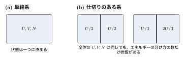
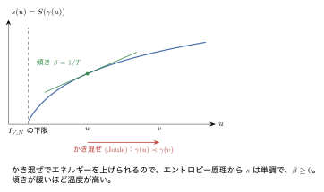
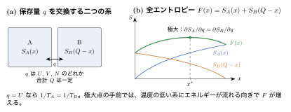
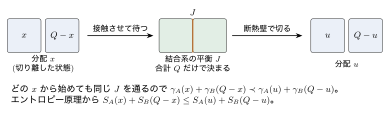
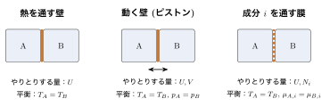
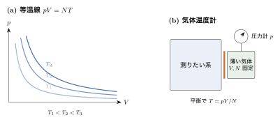
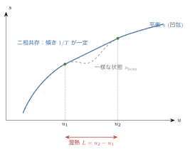
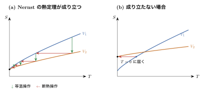

7 温度、圧力、化学ポテンシャル
前章までで、組成の等しい状態の比較はエントロピー \(S\) で決まることを示した。 この章では、\(S\) をエネルギー、体積、物質量の関数として見て、その微分から温度、圧力、化学ポテンシャルを定義する。 温度計は、この定義の後で、熱接触の平衡から測定手順として得られる。 この流儀は Callen [ 15 ] の教科書と同じである。 Lieb–Yngvason [ 1 , 第 5 章 ] は、温度の存在と微分可能性を熱平衡の公理から導いている。 ここでは微分可能性を仮定として置く。
7.1 温度の定義
「体積と組成を固定し、内部エネルギーが \(u\) の状態」と言うだけでは、状態が決まるとは限らない。 そのような状態がない \(u\) もあり、複数ある \(u\) もありうる。 例えば、仕切りで分けた二つの気体は、全体の \(U, V, N\) が同じでも、エネルギーの分け方の数だけ状態がある (図 7.1)。 そこで、状態が \(U, V, N\) で決まる系に限る。

一つの容器に入った一様な物質で、内部に仕切りを持たない系を単純系という。
単純系の状態 \(X\) の体積 \(V(X)\) とは、容器の内側の寸法を物差しで測り (定理 5)、そこから計算した容器の容積である。 複合系の体積は、各部分の体積の和とする。
体積は容器だけで決まり、中の物質の状態によらない。 仕切りで割合 \(t\) に分けた部分 \(tX\) (定義 24) の体積は \(t V(X)\) である。 組成 \(N\) は、成分ごとに量り入れた質量 \(\mathrm{comp}\, X\) (定義 32) である。 内部エネルギー \(U\) は定義 67、エントロピー \(S\) は定義 79 のものである。
二つの単純系を、物質を通さず動かない薄い金属の壁で接することを熱接触という。 接した二つの系を合わせたものを結合系という。
熱接触では体積と組成は変わらず、内部エネルギーだけがやりとりされる。 接触させることも、断熱壁を差し込んで切り離すことも、壁を動かすだけの手順なので断熱操作である。 重りは動かないので、内部エネルギーの合計は保存する。
単純系の平衡状態は、内部エネルギー \(U\)、体積 \(V\)、組成 \(N\) で決まる。
体積と組成を固定したとき、平衡状態として実現できる \(U\) の値は区間 \(I_{V,N}\) をなす。
熱接触の結合系の平衡状態は、内部エネルギーの合計と、それぞれの体積と組成で決まる。
一つ目は、ほかに状態を区別する量がないという主張である。 磁性体のように別の量 (磁化) が要る系では、それを座標に加える。 二つ目の区間には下限がある。それより低いエネルギーの状態は作れない。 三つ目は、結合系を一つの系とみなしたときの一つ目にあたる。 接触前にエネルギーをどう分けていたかは、接触後の平衡に残らない。
単純系の体積と組成を固定する。 \(u \in I_{V,N}\) に対し、座標が \((u, V, N)\) の平衡状態を \(\gamma (u)\) と書く。 エネルギーの関数としてのエントロピーを \(s(u) := S(\gamma (u))\) とおく。
経験則 96 から、\(\gamma (u)\) はちょうど一つ存在する。 Lean では、区間 \(I\) 上の状態の族 \(\gamma \) として与える。
\(u, v \in I_{V,N}\)、\(u \le v\) なら \(\gamma (u) \prec \gamma (v)\)。
Joule の実験 (図 4.1) がこの操作である。 体積を変えずに羽根車で水をかき混ぜると、重りの降下の分だけ内部エネルギーが上がる。 逆向き、つまり水を冷やして重りを持ち上げる断熱操作は見つかっていない (経験則 72)。
\(s\) は \(I_{V,N}\) 上で単調非減少である。
\(\gamma (u)\) と \(\gamma (v)\) は組成が等しいので、エントロピー原理から \(\gamma (u) \prec \gamma (v)\) は \(s(u) \le s(v)\) を意味する。
\(u\) が \(I_{V,N}\) の内点で \(s\) が \(u\) で微分可能なとき、逆温度を \(\beta (u) := s'(u)\)、温度を \(T(u) := 1/\beta (u)\) と定義する。
偏微分の記号では \(\beta = (\partial S / \partial U)_{V, N}\) である。 図 7.2 に定義を示す。

\(I_{V,N}\) の内点で \(\beta \ge 0\) である。\(\beta \ne 0\) なら \(T {\gt} 0\)。
単調な関数の微分は非負である。
\(\beta = 0\) は、かき混ぜてもエントロピーが増えない状態である。 Lieb–Yngvason はこれを公理で除いている。 ここでは \(\beta \ne 0\) を定理の仮定として置く。
\(S\) の単位を \(a\) 倍すると (定理 90)、\(T\) は \(1/a\) 倍になる。 温度の単位を選ぶことは、エントロピーの単位を選ぶことと同じである。
7.2 熱接触と温度の比較
熱接触 (定義 95) させた二つの系の内部エネルギーの合計を \(Q\) とする。 A の取り分を \(x\) とすると、切り離した状態のエントロピーは \(F(x) = f(x) + g(Q - x)\) である。 ここで \(f, g\) は A, B のエネルギーの関数としてのエントロピーである。

\(f'(u)\), \(g'(Q-u)\) が存在すれば \(F'(u) = f'(u) - g'(Q - u)\)。
連鎖律。

熱接触の平衡を切り離した分配を \(u\) とすると、どの分配 \(x\) についても \(F(x) \le F(u)\)。 とくに \(u\) が両系の区間の内点なら、\(F\) は \(u\) で極大になる。
結合系の平衡状態を \(J\) とする。経験則 96 から、\(J\) は分配 \(x\) によらない。 分配 \(x\) の二つの系を接触させれば \(J\) に移り、\(J\) を切り離せば分配 \(u\) になる。 どちらも断熱操作なので \(\gamma _A(x) + \gamma _B(Q-x) \prec \gamma _A(u) + \gamma _B(Q-u)\)。 両辺の組成は等しいので、エントロピー原理と加法性から \(F(x) \le F(u)\)。
熱接触の平衡では \(T_A = T_B\)。
Fermat の定理 (極大点で微分は \(0\)) から \(f'(u) = g'(Q - u)\)。
A と B、B と C がそれぞれ熱平衡なら、A と C の温度は等しい。
等号の推移律。
伝統的な構成では、第零法則を公理として置き、それを使って経験温度を定義する。 ここでは温度をエントロピーから定義したので、第零法則は定理になる。
ただし、この定理が言うのは「熱平衡なら温度が等しい」の向きだけである。 伝統的な第零法則は、A と C を接触させても何も起こらない、つまり温度が等しければ熱平衡でもあることを含む。 この逆向きは、温度が等しいことから全エントロピーが最大であることを言う必要があり、極大の条件 (微分が \(0\)) だけからは出ない。 エントロピーの凹性を使って定理 122 で示す。
\(\beta _A, \beta _B {\gt} 0\) で \(T_A {\lt} T_B\) なら、A にエネルギーを少し移すと全エントロピーが増える。
\(T_A {\lt} T_B\) は \(\beta _A {\gt} \beta _B\) と同値なので、\(F'(u) {\gt} 0\)。 差分商は \(F'(u)\) に収束するので、右側の近くで正。
温度計は、小さな系を測りたい系と熱接触させ、平衡に達してから読む手順である。 定理 104 から、温度計の温度は測りたい系の温度に等しい。 温度計が小さければ、相手の温度はほとんど変わらない。 よく使う気体温度計は、第 7.4 節の理想気体の状態方程式で読みを \(T\) に換算する。
7.3 圧力と化学ポテンシャル
\(S\) を \((U, V, N_1, \dots )\) の関数として見て、\(\pi := \partial S/\partial V\)、\(\kappa _i := \partial S/\partial N_i\) とおく。 圧力を \(p := \pi /\beta = T\, \partial S/\partial V\)、成分 \(i\) の化学ポテンシャルを \(\mu _i := -\kappa _i/\beta = -T\, \partial S/\partial N_i\) と定義する。
熱接触と同じ議論が、ほかの保存量にも使える (図 7.5)。 そのためには、経験則 96 の三つ目を、動く壁や膜で結んだ結合系にも広げる。 Lean の定理 exchange_equilibrium は、一つの量 \(q\) を、他の座標を固定したまま A と B の間で移すときの主張である。 したがって、どの量が独立に移せるかを壁ごとに指定しなければならない。 合計が保存するとき、全エントロピーの変化の一次の項は
である。
熱を通す動く壁：\(U_A\) と \(V_A\) を独立に変えられる。全エントロピーが \((U_A, V_A)\) の二変数の関数として極大なら、\(V_A\) を固定した直線上でも、\(U_A\) を固定した直線上でも極大である。それぞれに exchange_equilibrium を使って \(\beta _A = \beta _B\) と \(\pi _A = \pi _B\)、つまり \(T_A = T_B\)、\(p_A = p_B\)。
成分 \(i\) だけを通す熱を通す膜：同様に \(U_A\) と \(N_{A,i}\) を独立に変えられ、\(T_A = T_B\)、\(\mu _{A,i} = \mu _{B,i}\)。
断熱の動く壁：壁が動くと、互いに仕事をし合うので内部エネルギーも変わる。\(\Delta U_A = -p\, \Delta V_A\) のように \(U_A\) と \(V_A\) は独立に動かないので、上の極大の議論から \(\pi _A = \pi _B\) だけを取り出すことはできない。力の釣り合いから \(p_A = p_B\) を期待するのは力学の議論であり、温度がどう落ち着くかはこの枠組みでは決まらない (断熱ピストンの問題として知られている)。

7.4 理想気体
理想気体は、温度、圧力、化学ポテンシャルの定義がどう働くかを具体的に確かめられる例である。 さらに、気体温度計の原理でもある。 十分に薄い気体では、Boyle と Charles の法則 (\(pV\) は温度だけで決まり、温度に比例する) と、Joule の自由膨張の実験 (内部エネルギーは体積によらない) が成り立つ。 これらを一つにまとめたのが、次のエントロピーである (定理 113)。
定数 \(c {\gt} 0\), \(s_0\) に対し、エントロピーが
で与えられる単純系を理想気体という。
十分に薄い気体のエントロピーは、ある \(c {\gt} 0\), \(s_0\) で理想気体のエントロピーに近い。
エントロピーの単位を Boltzmann 定数にとると、単原子気体で \(c = 3/2\)、二原子気体で常温では \(c = 5/2\) である。 \(s_0\) はエントロピーの基準値の選び方 (定理 90) と、分子の質量で決まる。
\(t {\gt} 0\) について \(S(tU, tV, tN) = t\, S(U, V, N)\)。
\(U/N\) と \(V/N\) は \(t\) 倍で変わらない。
\(\partial S / \partial U = cN/U\) なので、\(T = U/(cN)\)。つまり \(U = cNT\) であり、内部エネルギーは温度だけで決まる。
\(\log (U/N)\) を \(U\) で微分する。
\(\partial S / \partial V = N/V\) なので、\(p = T\, \partial S/\partial V\) は \(pV = NT\) を満たす。
\(p = (N/V) / (cN/U) = U/(cV)\) と \(T = U/(cN)\) を比べる。
逆に、エントロピーの二つの偏微分の形と示量性から、エントロピーは理想気体の形に決まる。
関数 \(S(U, V, N)\) (\(U, V, N {\gt} 0\)) が次の三つを満たすとする。
\(S(tU, tV, tN) = t\, S(U, V, N)\) (\(t {\gt} 0\))。
\(\partial S/\partial U = cN/U\)。
\(\partial S/\partial V = N/V\)。
このとき \(S\) は理想気体のエントロピーであり、\(s_0 = S(1, 1, 1)\)。
\(S - N(c \log U + \log V)\) は \(U\) で微分しても \(V\) で微分しても \(0\) なので、\(N\) だけの関数 \(h(N)\) である。 示量性を \(U = V = N\) と \((1, 1, 1)\) の比較に使うと \(h(N) = N\, S(1,1,1) - N(c+1) \log N\)。 これを代入して整理する。
この定理は温度を使わない、関数についての主張である。 温度と圧力の定義 (定義 100, 107) で読みかえると、二つ目の条件は \(U = cNT\)、三つ目は \(pV = NT\) になる。
この読みかえは循環しない。 \(T\) はエントロピーから定義した量で、どの系で測っても同じ値になる (定理 104)。 したがって \(U = cNT\) と \(pV = NT\) を確かめるには、調べたい気体とは別の系を温度計に使えばよい。 その温度計の目盛りは、エントロピーの測定 (定理 85, 116) で決める。 調べたい気体そのものを気体温度計に使って確かめることはできない。それは循環である。 実用の気体温度計は、経験則 109 が確かめられた後で使うものである。
二つの条件の経験的な意味は次のとおりである。 二つ目は、Joule の自由膨張 (内部エネルギーが体積によらない) と、熱容量が一定であることを合わせたもの。 三つ目は Boyle と Charles の法則である。 どちらかを外すと、ほかのエントロピーも許される。 例えば van der Waals 気体は三つ目を満たさない。

気体温度計は、体積を固定した薄い気体を測りたい系と熱接触させ、圧力を読む手順である (図 7.6)。 熱平衡では温度が等しいので (定理 104)、状態方程式から \(T = pV/N\) と読める。 ここまでの \(N\) は組成、つまり天秤で量った質量 \(M\) である (定義 32)。 この単位のままでは \(pV = NT\) の \(T\) は「質量あたりのエネルギー」の単位を持つ。 気体分子一個の質量を \(m_0\) として粒子数 \(N := M/m_0\) に取り直し、エントロピーの単位を J/K にとると、\(pV = N k_B T\) となる。 以下の気体温度計の式の \(N\) は粒子数である。
化学ポテンシャルも計算できる。 \(\partial S/\partial N = c \log (U/N) + \log (V/N) + s_0 - c - 1\) なので、\(\mu = -T\, \partial S/\partial N\) は濃度 \(N/V\) が高いほど大きい。 物質は化学ポテンシャルの高い側から低い側へ、つまり濃い側から薄い側へ移る。
7.5 基本関係式
この節の \(dS\), \(dU\), \(dV\), \(dN_i\) は無限小の量ではなく、全微分の略記である。 状態の座標を \(x = (U, V, N_1, \dots )\) とし、\(S\) が点 \(x\) で微分可能とする。 \(S\) の全微分 \(dS\) は、座標の変位 \(h\) を \(S\) の一次の変化 \(S'(x)\, h\) に送る線形写像である。 \(dU\), \(dV\), \(dN_i\) は座標関数の全微分、つまり \(h\) のそれぞれの成分を取り出す線形写像である。 したがって \(dS = \beta \, dU + \pi \, dV + \sum _i \kappa _i\, dN_i\) は線形写像の等式であり、すべての変位 \(h\) に代入した実数の等式と同値である。 Lean では、一つの変位に代入した実数の等式として述べている (fundamental_relation)。 線形写像の等式としての形 (fundamental_relation_forms) も示した。 熱 \(\delta Q = dU + p\, dV\) も同じく線形写像だが、ある関数の全微分になっているとは限らない。\(d\) でなく \(\delta \) と書くのはそのためである。
\(dS = \beta \, dU + \pi \, dV\) のとき、\(T := 1/\beta \), \(p := \pi /\beta \) とおくと \(dU = T\, dS - p\, dV\)。 準静的過程で熱を \(\delta Q := dU + p\, dV\) と定義すれば \(dS = \delta Q / T\)。
代数計算。
\(dS = \beta \, dU + \pi \, dV + \sum _i \kappa _i\, dN_i\) のとき、\(T := 1/\beta \), \(p := \pi /\beta \), \(\mu _i := -\kappa _i/\beta \) とおくと \(dU = T\, dS - p\, dV + \sum _i \mu _i\, dN_i\)。
代数計算。
\(\mu _i\) が成分 \(i\) の化学ポテンシャルである。 \(\kappa _i = \partial S/\partial N_i\) なので、\(\mu _i = -T\, \partial S/\partial N_i\) となる。
体積と組成を固定してエネルギーを \(u\) から \(v\) に上げるとき、\(s(v) - s(u) = \int _u^v \beta (x)\, dx = \int _u^v dx / T(x)\)。
微分積分学の基本定理。\(\beta \) の積分可能性を仮定する。
エネルギーの増分はかき混ぜの仕事 (重りの降下) で、\(T\) は温度計で測る。 こうしてエントロピー差は、重りと温度計の読みから求まる。
\(S(tx) = t\, S(x)\) (\(t {\gt} 0\)) を満たす関数が \(x\) で微分可能なら、\(S'(x)\, x = S(x)\)。
\(t \mapsto S(tx)\) を \(t = 1\) で二通りに微分する。連鎖律では \(S'(x)\, x\)、同次性では \(S(x)\) になる。
エントロピーは示量的なので (定理 88)、座標 \(x = (U, V, N_1, \dots )\) で表して微分可能なら Euler の関係が使える。 すると \(S = \beta U + \pi V + \sum _i \kappa _i N_i\) となる。
7.6 エントロピーの凹性
エントロピーは状態の座標について凹 (上に凸) である。 この性質は、熱容量が正であること、熱平衡が安定であること、相の共存が起こることをまとめて説明する。 凹性は新しい経験則ではなく、仕切りを抜く操作とエントロピー原理から出る。
単純系の平衡状態を、座標 \(x = (U, V, N)\) で \(\gamma (x)\) と書く (経験則 96)。 多成分なら \(N\) は成分ごとの物質量の組である。
座標の凸集合 \(D\) の \(x, y\) と \(a, b \ge 0\) (\(a + b = 1\)) について、\(a\gamma (x) + b\gamma (y)\) から仕切りを抜いて \(\gamma (ax + by)\) に断熱的に移れるとする。 このとき \(S(\gamma (\cdot ))\) は \(D\) 上で凹：
組成は座標の \(N\) について線形なので、両辺の組成は等しい。 エントロピー原理から \(S(a\gamma (x) + b\gamma (y)) \le S(\gamma (ax + by))\)。 左辺は加法性と示量性で \(a S(\gamma (x)) + b S(\gamma (y))\)。
仮定の操作は次のとおりである。 座標 \(x\) の系から割合 \(a\) の部分を、\(y\) の系から割合 \(b\) の部分を仕切りで切り出し (定義 24)、二つを並べる。 並べた系の内部エネルギー、体積、物質量はそれぞれの和なので、座標は \(ax + by\) である (定理 69)。 二つの間の仕切りを抜いて待つと、重りを動かさずに一つの単純系の平衡状態になる。 その状態は経験則 96 から \(\gamma (ax + by)\) である。
この操作は一般に不可逆である。 \(x\) と \(y\) の温度や圧力が違えば、仕切りを抜いた後に熱や物質が流れ、元の二つの状態には断熱的に戻れない。 \(x\) と \(y\) の温度、圧力、化学ポテンシャルがすべて等しければ、凹関数は二点の間で一次式になるので、凹性の不等式は等号になる。
7.6.1 凹性から出ること
開集合上の凹関数は連続である。 したがって \(u \mapsto s(u)\) は区間 \(I_{V,N}\) の内部で連続である。
Mathlib の ConcaveOn.continuousOn。凹関数は局所 Lipschitz である。
凹関数は、さらに各点で左右の微分を持ち、微分可能でない点は高々可算個である。 温度の定義 (定義 100) で置いた微分可能性の仮定は、この可算個の点を除くためのものと見なせる。 微分可能でない点では左右の微分が違い、一つのエネルギーに温度の区間が対応する。
凹で一次同次な関数は \(S(x) + S(y) \le S(x + y)\) を満たす。
\(x + y = 2 \cdot \tfrac 12 (x + y)\) と一次同次性から \(S(x + y) = 2 S(\tfrac 12 x + \tfrac 12 y) \ge S(x) + S(y)\)。
二つの系を合わせて仕切りを抜くと、エントロピーは減らない。 これは凹性を言いかえたものである。
凹関数 \(F\) が点 \(x\) で微分可能で \(F'(x) = 0\) なら、\(x\) は \(F\) の最大点である。
凹関数の差分商は、\(x\) の右では \(F'(x)\) 以下、左では \(F'(x)\) 以上。
A, B のエネルギーの関数としてのエントロピー \(s_A\), \(s_B\) が凹で、分配 \(x\) で逆温度が等しい (\(s_A'(x) = s_B'(Q - x)\)) とする。 熱接触で \(\gamma _A(x) + \gamma _B(Q - x)\) から結合系の平衡状態 \(J\) に移り、\(J\) を切り離すと何らかの分配 \(u\) の状態 \(\gamma _A(u) + \gamma _B(Q - u)\) に移れるとする。 このとき \(J\) から元の分配 \(x\) にも断熱的に移れる：\(\gamma _A(x) + \gamma _B(Q - x) \sim J\)。
全エントロピー \(F(y) = s_A(y) + s_B(Q - y)\) は凹で、\(F'(x) = s_A'(x) - s_B'(Q - x) = 0\)。 補題 121 から \(F(u) \le F(x)\)。 エントロピー原理から \(S(J) \le F(u) \le F(x)\) なので、\(J \prec \gamma _A(x) + \gamma _B(Q - x)\)。
温度が等しい二つの系を接触させても、エントロピーの増える変化は起こらず、切り離せば元に戻せる。 これが第零法則の「温度が等しければ熱平衡」の向きである (定理 105 の後の注意)。 全エントロピーの最大点が一つでない場合 (相の共存など) には、接触の後に切り離した分配が \(x\) と違うこともありうる。 その場合でも、どちらの分配もエントロピーが等しく、互いに断熱的に移れる。
7.6.2 安定性
凹性の不等式は、一様な状態が二つの部分に分かれる変化に対して安定であることを表す。 座標 \(x\) の一様な系を、仕切りなしで、割合 \(a\) の部分が \(x + b h\)、割合 \(b\) の部分が \(x - a h\) になるように分けたとする。 合計の座標は \(x\) のままである。 凹性から \(a S(x + bh) + b S(x - ah) \le S(x)\) なので、このような自発的な分離はエントロピーを増やさない。
\(S\) が二回微分可能なら、凹性はヘッセ行列が負の半定値であることと同値である。 一変数に制限すると、次の条件が出る。
\(\partial ^2 S/\partial U^2 \le 0\)：定積熱容量が正 (\(C_V {\gt} 0\)、定理 125)。
\(\partial ^2 S/\partial V^2 \le 0\) と \(U\), \(V\) の二変数の条件を合わせると、等温圧縮率が正 (\(\kappa _T {\gt} 0\))。体積を押し縮めると圧力が上がる。
二つ目は、この blueprint では形式化していない。
7.6.3 相の共存

単純系の定義 (定義 93) は一様な物質を考えていた。 一様な状態に制限したエントロピー \(s_{\mathrm{hom}}(u)\) が凹でない区間があったとする (図 7.7 の点線)。 その区間の状態は、\(u_1\) と \(u_2\) の二つの部分に分かれた方がエントロピーが大きい。 したがって仕切りなしで放置すると、系は二つの部分 (二相) に分かれる。 二相の割合を \(a : b\) とすると、エネルギーは \(u = a u_1 + b u_2\)、エントロピーは \(a s(u_1) + b s(u_2)\) である。 これは \(u\) について一次式で、点 \((u_1, s(u_1))\) と \((u_2, s(u_2))\) を結ぶ線分になる。
こうして、実際の平衡状態のエントロピー \(s(u)\) は、\(s_{\mathrm{hom}}\) の上にある最小の凹関数 (凹包) になる。 線分の区間では \(s' = 1/T\) が一定なので、エネルギーを加えても温度は変わらない。 これが一次相転移で、線分に沿って加えるエネルギーが潜熱 \(L = u_2 - u_1\)、エントロピーの増分は \(L/T\) である。 線分の両端で接線の傾きが等しいことが、二相の温度が等しいという共存条件である。 体積も変数に入れると、同じ作図から圧力と化学ポテンシャルが等しいという条件も出る (Maxwell の等面積則の熱力学的な根拠)。
この節の凹包の議論は、どの状態を「一様」と見なすかに依存し、Lean では形式化していない。 凹性の定理 118 そのものは、相が共存する状態も含めて成り立つ。
7.6.4 凹性と自由エネルギー
Helmholtz 関数 \(F = U - TS\) (第 8 章) は、温度 \(T\) を与えて \(u - T s(u)\) を \(u\) について最小にした値として書ける。 最小になるのは \(s'(u) = 1/T\) の点で、\(s\) が凹なのでこの点は最大ではなく最小である。 \(s\) が凹であれば、\(F\) から逆に \(s\) を復元できる (Legendre 変換)。 凹でなければ、\(F\) から復元できるのは \(s\) の凹包だけである。 エネルギーを変数とする記述と温度を変数とする記述が同じ情報を持つのは、エントロピーが凹だからである。
7.7 熱容量
熱量測定 (定理 116) で実際に測るのは、エネルギーを加えたときの温度の上がり方である。 これを表す量が熱容量である。 この節でも、体積と組成を固定した単純系の状態 \(\gamma (u)\) と \(s(u) = S(\gamma (u))\) (定義 97) を考える。
\(T(u) = 1/s'(u)\) が \(u\) で微分可能で \(T'(u) \ne 0\) のとき、\(C(u) := 1/T'(u) = du/dT\) を熱容量という。 体積を固定しているので、これは定積熱容量 \(C_V\) である。
Lean の heatCapacity は \((T'(u))^{-1}\) として定義しており、\(T'(u) = 0\) のときは実数の約束 \(0^{-1} = 0\) で \(0\) を返す。 この値は熱容量ではない。 熱容量についての定理は、どれも \(T'(u) \ne 0\) を保証する仮定を置いている。
熱容量は温度の関数ではなく、エネルギー \(u\) の関数として定義した。 温度を座標に使うには、\(u \mapsto T(u)\) が逆に解けなければならないからである。 逆に解けることは、次の定理の \(C {\gt} 0\) から出る。
\(\beta = s'\) が \(u\) で微分可能で \(\beta (u) \ne 0\) とする。 \(T = 1/\beta \) の微分は \(-\beta '/\beta ^2\) である。 さらに \(\beta '(u) \ne 0\) なら \(T'(u) \ne 0\) で、\(C\, T' = 1\)、\(C = -\beta ^2/\beta '\)。
逆数の微分法則。
熱容量の符号は \(s\) の凹凸で決まる。 \(s\) が凹であることは前節で示した (定理 118)。
\(s\) が \(u\) のまわりで凹かつ微分可能で、\(\beta (u) \ne 0\)、\(\beta '(u) \ne 0\) なら \(C(u) {\gt} 0\)。
凹関数の微分は単調減少なので \(\beta ' \le 0\)。\(\beta ' \ne 0\) から \(\beta ' {\lt} 0\)、よって \(C = -\beta ^2/\beta ' {\gt} 0\)。
熱容量が正であることは、熱平衡の安定性である。 熱容量が負の系は、熱を受け取ると温度が下がり、さらに熱を受け取る。
\(\beta ' = 0\) の場合は除いてある。 一次相転移では、二相が共存するエネルギーの区間で \(s\) は一次関数になり、\(\beta ' = 0\) となる。 このとき温度は一定のままエネルギーだけが増え、加えたエネルギーが潜熱である。 熱容量はこの区間で定義されない (無限大と見なす)。
\(u\) を温度の関数 \(u(T)\) と見て、その微分が \(C\) とする。 このとき \(dS/dT = C/T\)。
連鎖律と \(ds/du = 1/T\)。
したがって \(S(T_2) - S(T_1) = \int _{T_1}^{T_2} C(T)/T\, dT\) である。 熱量測定は、エネルギーを少しずつ加えて温度の上がり方 \(C(T)\) を測り、この積分を計算する手順になる (第 9 章)。
体積の代わりに圧力を一定に保つと、熱容量は \(C_p = dH/dT\) になる (第 8 章のエンタルピーを参照)。 理想気体では \(C_V = cN\)、\(C_p = (c + 1)N\) である (定理 138)。 一般には \(C_p - C_V = TV\alpha ^2/\kappa _T\) となる。ここで \(\alpha \) は熱膨張率、\(\kappa _T\) は等温圧縮率である。 この式は Maxwell の関係式から導かれるが、この blueprint では形式化していない。
固体の熱容量は、高温ではおよそ一定 (Dulong–Petit の法則) で、低温では \(T \to 0\) で \(0\) に近づく。 絶縁体では \(C \propto T^3\) (Debye の法則)、金属では電子の寄与 \(C \propto T\) が加わる。 \(C \to 0\) は、\(T \to 0\) でエントロピーが有限にとどまるために必要である。 \(\int _0^T C/T'\, dT'\) が収束しなければならないからである。
7.8 第三法則
第三法則は温度 \(0\) の極限についての主張である。 Gibbs 自由エネルギーまでの構成には使わない。 役割は二つある。絶対零度に有限回の操作では届かないことと、エントロピーの基準値を決めることである。
単純系の組成を固定し、体積などの制御変数の値 \(V\) ごとに、温度 \(T {\gt} 0\) の平衡状態のエントロピーを \(s_V(T)\) とする。 右極限 \(\lim _{T \to +0} s_V(T)\) は \(V\) によらない共通の値 \(L\) である。

各 \(s_V\) は \(T {\gt} 0\) で狭義単調増加とし、零度での値を極限 \(s_V(0) := L\) で定める。 温度を保って制御変数を変える等温操作と、エントロピーを減らさない断熱操作をどう繰り返しても、正の温度から始めれば温度は正のままである。
操作の回数についての帰納法。 等温操作では温度は変わらない。 単調性と極限から、正の温度 \(T\) では \(s_V(T) {\gt} s_V(T/2) \ge L\)。 断熱操作で温度が \(0\) になったとすると、\(L = s_{V'}(0) \ge s_V(T) {\gt} L\) となり矛盾する。
断熱消磁による冷却が図 7.8 (a) の手順である。 磁場を制御変数とし、磁場をかけて等温で磁化をそろえ、断熱的に磁場を下げて温度を下げる。
Nernst の熱定理から、組成ごとに、\(T \to 0\) のエントロピーは状態によらない一つの値になる。 エントロピーは組成ごとの基準値を選ぶ自由度を持つので (定理 90)、この値を \(0\) に選べる。 これが Planck の形の第三法則 \(S \to 0\) である。 化学反応を扱わないこの blueprint では、Planck の形は基準値の約束であり、経験的な内容を持たない。 反応を扱うと、反応の前後で \(T \to 0\) のエントロピーが等しいという主張が経験的な内容になる。
理想気体のエントロピー (定義 108) は \(T \to 0\) で \(-\infty \) に発散し、Nernst の熱定理を満たさない。 理想気体の式は、薄くて温度の高い気体の近似としてだけ使える。 ガラスや氷のように、低温で乱れが凍結した物質は、エントロピーが \(0\) に近づかないように見える。 これは平衡状態でないためである (第 9 章)。